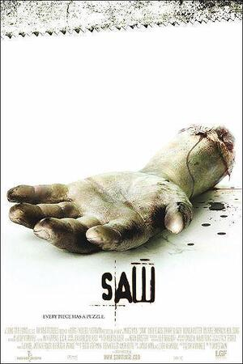

Saw

Desplegar info
Adam se despierta encadenado en una cámara subterránea. A su lado, también encadenado, el Dr. Lawrence Gordon. Entre ellos hay un hombre muerto. Ninguno de los dos sabe por qué está allí, pero tienen un casette con instrucciones para que el Dr. mate a Adam en un plazo de ocho horas. Recordando una investigación de asesinato llevada a cabo por el detective Tapp, Gordon descubre que él y Adam son victimas del psicópata Jigsaw. Tienen muy pocas horas para solventar su rompecabezas.
| Año | 2004 |
|---|---|
| Nacionalidad | EEUU |
| Director | James Wan |
| Actores principales | Cary Elwes, Monica Potter |